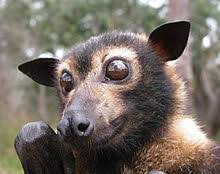

Bats pop up in the fossil record around 50 million years ago during a time known as the Eocene. Paleontologists have recovered remains ranging from teeth and bits of jaw to stunning full skeletons in places as far-flung as Wyoming, Paris, Australia and India's Vastan Mine.
Listen carefully on a quiet summer night and you might hear them. Even if you don’t see a bat’s frantically fluttering form, you might catch its high-pitched chirp as it searches the night for dinner. You’re probably hearing a little brown bat, a common insect-eater found throughout North America, but it is just one of more than a thousand species of bat ranging from the one-inch-long Kitti’s hog-nosed bat to the enormous, three-pound giant golden-crowned flying fox.
Large or small, bats suffer a reputation problem. Aside from being associated with vampires, they’re often called “flying rats” and blamed for the spread of zoonotic diseases into humans (including COVID-19, though whether that blame is founded is as of yet unclear.) This fear often overshadows the fascinating fact that bats are the only mammals to have evolved powered flight, and they’ve been flapping around for tens of millions of years. Where, then, did these flying oddities come from?

Image by batcon.org
There are some differences between the oldest bats and their modern relatives. Based upon the ear anatomy of the better-preserved specimens, for example, scientists know that the first bats couldn’t echolocate. They relied on sight, smell and touch to find their meals. While modern bats have a claw only on the equivalent of our thumb, earlier bats kept some of the additional finger claws inherited from their ancestors. A fossil bat dating to about 52 million years ago, dubbed Onychonycteris finneryi in 2008, had claws on all five of its fingers. New technology has added a few details to the early bat story, too. A recent study of coloration in the fossil record found that two 48 million-year-old bats found in Germany were mostly brown.
Despite these strides, scientists are left with some big questions. For one thing: The 50-million-year-old bat specimens are already recognizable as bats, so where did they come from? When, where, why and how the first bats become airborne is another mystery buried by Deep Time.
Paleontologists are familiar with such conundrums. For decades, anatomists and zoologists were confounded by the origin of whales. Then, at the end of the 20th century, a wealth of fossil finds provided a detailed outline of how hoofed land mammals became the sea’s largest swimmers. Birds presented a similar problem, with their origin from an unknown reptile ancestor stumping experts until some new ideas about the “terrible lizards” and amazing fossil finds proved that birds are living dinosaurs. Until recently, turtles presented an odd case similar to that of bats; the shelled reptiles seemed to appear out of nowhere in the fossil record. During the past two decades, experts have identified new species of transitional turtles and revised their opinions of already-known species to explain how turtles got their shells.
Image by batcon.org
Each of these puzzling paleontological examples involved a major change in how the animals lived. Whales moved from the land to the ocean, birds started as terrestrial dinosaurs and took to the air and turtles were terrestrial reptiles that started burrowing underground. Bats follow the trend, undoubtedly starting from terrestrial mammal ancestors. The question is where the missing examples of early bats may be found.
“The short answer is, we don’t know why there is a missing record of ten million years,” says University of Birmingham paleontologist Emily Brown. Several factors may be at play, according to an assessment of the bat fossil record Brown and colleagues published last year.
Early bats’ choice of dwelling may have been a barrier to their preservation. “It’s previously been suggested that early bats may have predominantly lived in forested environments, which do not have very good preservation potential,” Brown says. Her survey found that the fossil record of modern bats that live in forests and jungles is largely incomplete, probably for the same reason.
The bats that modern scientists know best lived in places where rapid and delicate preservation entombed the tiny mammals. Some of the bones of Icaronycteris index, one of the earliest known bats and a neighbor of Onychonycteris, are as thin as a human hair. The only reason we know about these bats is that they lived around lakes that favored exceptional preservation; the fine sediment and oxygen-depleted water on the lake bottoms allowed fossils to be buried quickly in an environment scavengers and other decomposers couldn’t reach.
Brown says teeth make up most of the bat fossil record. Scientists often don’t have a clear picture of fossil bats unless they were preserved at exceptional sites that yield complete or articulated skeletons. It’s these types of deposits, called lagerstatten, that paleontologists will have to find to solve the mystery. The only way to understand when bats first appeared, how they evolved to fly, and more, Brown says, is to find more of these exceptional sites from rocks 50 to 66 million years old.

Refining our sense of what an early proto-bat might look like is also essential. The current record doesn’t offer many hints. Consider Onychonycteris, one of the oldest known bats featuring some of the most complete remains. While this mammal has more primitive limb proportions and claws on its fingers, says Royal Ontario Museum paleontologist Kevin Seymour, “it is still a bat.” The closest paleontologists can get to understanding this animal is looking at living mouse-tailed bats, Seymour notes, which use a combination of fluttering and gliding to move through the air.
What came before is only speculative. Bats are mammals, and so the earliest bats were certainly furry. Based on finds such as Onychonycteris, it’s reasonable to propose that bats went through a gliding stage before powered flight, Seymour says, and the first bats probably were insectivores. But that’s about all scientists can say with confidence without a relatively complete fossil to fill in the gap “It will certainly require articulated material,” Seymour says, relatively complete fossils acting as keystones to the tiny fossils of Paleocene and Eocene mammals that may already be resting in museums drawers.
While experts search for the relevant fossils, other mammals may offer a rough guide of what to expect. Bats may be the only mammals to evolve powered flapping flight, but other mammal species from flying squirrels to a lemur-like creature called the colugo can glide through the air on expanded membranes. The earliest bats probably evolved along a similar route, with some extra skin allowing them to move from tree to tree.
New information about existing fossils buttresses the idea that the earliest bats scampered around in the trees. In 2013, paleontologists Kevin Padian and Kenneth Dial presented research at the annual Society of Vertebrate Paleontology meeting that noted some of the earliest bats had hindlimbs that flexed to the side, rather than aligning directly beneath the body. This arrangement is more consistent with climbing rock faces and trees than walking on the ground. Searching for more tree-living beasts will help connect the fossil dots.
There are many many more fossiles that are yet to be discovered because thats how long bats have been around!